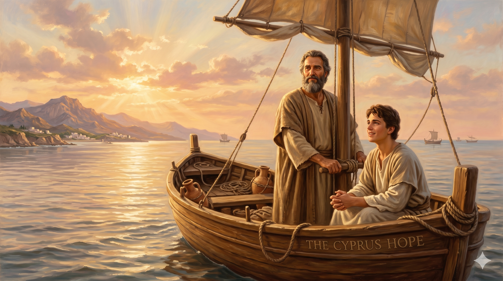

따뜻한 빛 속에서 손을 내밀어 사람을 일으키는 바나바 — 화려한 무대의 주인공이 아닌, 뒤에서 사람을 세우고 길을 열어 주는 조용한 영웅의 모습
"구브로에서 난 레위족 사람이 있으니 이름은 요셉이라 사도들이 바나바라 칭하니 번역하면 위로의 아들이라 그가 밭이 있으매 팔아 값을 가져다가 사도들의 발 앞에 두니라" — 사도행전 4:36-37
바나바를 한 단어로 정의한다면 "연결자"입니다. 그는 끊어진 것들을 잇고, 거절당한 사람들에게 문을 열어 주고, 잊혀진 사람들을 무대 위로 데려오는 사람이었습니다. 예루살렘 교회가 사울을 두려워하며 거부할 때 바나바가 그의 손을 잡았습니다(행 9:27). 만약 그 순간이 없었다면 바울의 사도적 사역은 시작도 되기 전에 막혔을 것입니다. 안디옥 교회가 이방인 성도들로 급성장할 때 파송받아 가서 "하나님의 은혜를 보고 기뻐하며" 모두를 굳건하게 세운 것도 바나바였습니다(행 11:23). 그리고 모두가 포기한 마가를 붙들고 제2의 선교여행을 떠난 것도 그였습니다. 마가는 훗날 베드로의 통역자이자 마가복음의 저자가 됩니다(벧전 5:13). 바나바가 없었다면 우리는 마가복음도 갖지 못했을지 모릅니다.
바나바는 사도행전의 후반부에 가면 무대에서 사라집니다. 바울이 중심이 되면서 바나바는 갈라디아서와 고린도전서에 잠깐 이름이 언급될 뿐입니다. 그러나 그가 심어 놓은 씨앗들은 신약 전체를 통해 자라납니다. 바울의 서신 13편, 마가복음, 안디옥 교회를 통한 이방인 선교 전체 — 그 뒤에는 언제나 바나바가 있었습니다. 역사는 화려한 사람들의 이름을 기억하지만, 하나님 나라는 바나바 같은 사람들의 헌신으로 세워집니다. 조용한 영웅의 신앙이란 이런 것입니다. 자신이 무대에서 사라져도, 자신이 세워 놓은 사람들이 세상을 바꿉니다.

바나바와 마가가 키프로스로 항해하는 장면 — 바울에게 버려진 마가를 다시 붙들고 새로운 선교여행을 떠나는 바나바. 두 번째 기회를 주는 것이 그의 사명이었습니다
바나바는 우리에게 조용하지만 깊은 도전을 던집니다. 당신은 누군가의 바나바가 되어 본 적이 있습니까? 모두가 외면할 때 그 사람의 손을 잡아 준 적이 있습니까? 실패한 사람에게 두 번째 기회를 준 적이 있습니까? 우리는 흔히 바울처럼 되기를 원합니다. 강하고, 비전이 넘치고, 역사에 이름을 남기는 사람. 그러나 바울을 만든 것은 바나바였습니다. 하나님 나라에는 두 가지 역할이 모두 필요합니다. 아마도 지금 하나님은 당신에게 누군가를 위한 바나바의 역할을 맡기고 계실지도 모릅니다.
바나바가 우리에게 가르쳐 주는 신앙의 핵심은 "내어주는 것"입니다. 밭을 팔아 드렸고, 자신의 시간과 신뢰를 사울에게 내어주었고, 인정을 바울에게 내어주었고, 마지막에는 자신의 선교 동역자 자리를 마가에게 내어주었습니다. 내어주는 것이 손해처럼 보이지만, 하나님 나라에서는 내어줄수록 더 큰 열매가 맺힙니다. 오늘 내 것을 내어줌으로써 누군가를 살릴 수 있다면, 그것이 바나바의 신앙입니다.
바나바는 무대에서 사라졌지만, 그가 세운 사람들이 세상을 바꿨습니다.
당신이 키운 한 사람이 다음 세대의 바울이 될 수 있습니다.
위로하고, 붙들고, 내어주십시오. 그것이 하나님 나라의 영웅입니다.